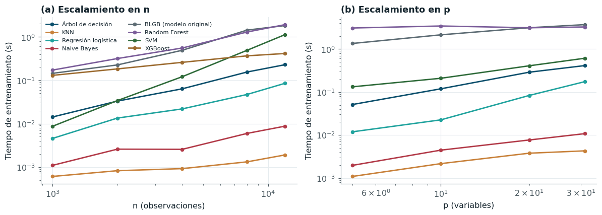
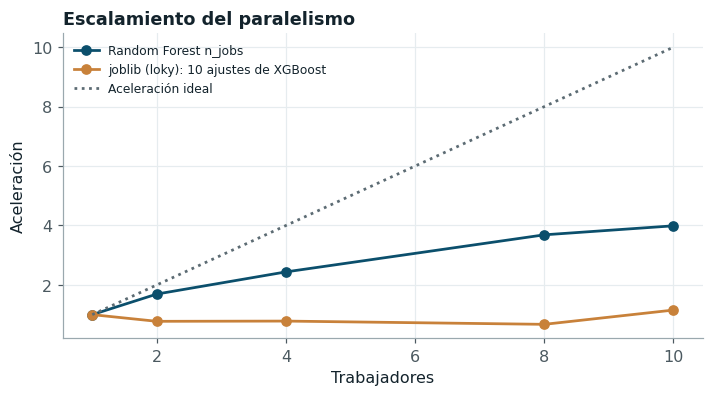

Optimización computacional#
El experimento completo exigió del orden de 82.000 ajustes de modelos en un portátil con un procesador Intel Core i7-1255U (dos núcleos de rendimiento y ocho de eficiencia, doce hilos) y 15,7 GB de memoria, sin GPU. Esta sección contrasta la complejidad teórica de cada modelo con su tiempo empírico, evalúa las variantes eficientes que propone la guía y documenta la paralelización y el perfilamiento que hicieron viable el experimento.
Complejidad teórica frente a tiempo empírico#

Figura 14 Tiempo de entrenamiento en función del número de observaciones (escala log-log). La pendiente de cada recta estima el exponente empírico de la complejidad.#
| exponente empírico en n | exponente empírico en p | O(·) entrenamiento | O(·) inferencia | |
|---|---|---|---|---|
| Árbol de decisión | 1.12 | 1.17 | O(p·n log n) | O(profundidad) |
| KNN | 0.43 | 0.77 | O(1) (almacena) | O(n·p) por consulta |
| Regresión logística | 1.12 | 1.51 | O(n·p) por iteración | O(p) |
| Naive Bayes | 0.78 | 0.92 | O(n·p) | O(p) por consulta |
| BLGB (modelo original) | 1.09 | NaN | O(T·(n·k + 2^d·k·B)) ×2 ensambles | O(T·d) + O(p log B) |
| Random Forest | 0.98 | 0.56 | O(T·p'·n' log n') | O(T·profundidad) |
| SVM | 1.95 | 0.01 | O(n²·p) a O(n³) | O(n_sv·p) |
| XGBoost | 0.48 | 0.85 | O(T·(n·p + 2^d·p·B)) con hist | O(T·d) |
Los exponentes empíricos se estimaron con cinco tamaños de muestra entre 1.000 y 12.000 días y deben leerse como pendientes locales en ese rango, no como órdenes asintóticos. Con esa salvedad, la concordancia con la teoría es buena en los casos informativos. La SVC con núcleo RBF escala con un exponente de 1,95, muy cerca del comportamiento cuadrático esperado para el problema dual de libsvm, y es la razón por la que en el experimento se usó la aproximación de Nyström. El árbol de decisión (1,12) y Random Forest (0,98) siguen el orden \(n\log n\) del ordenamiento de los cortes, y la regresión logística (1,12) el orden lineal por iteración más un número de iteraciones que crece levemente con n. El modelo original escala con un exponente de 1,09, lineal como predice la proposición 1 del capítulo 5. Los exponentes menores que uno de KNN (0,43), que en el entrenamiento solo almacena los datos, y de XGBoost con histogramas (0,48) no contradicen la teoría: reflejan costos fijos (validación de datos, construcción de los histogramas, gestión de hilos) que dominan a tamaños pequeños, de modo que la pendiente en este rango subestima el orden asintótico.
Variantes eficientes por modelo#
KNN: estructuras de indexación y vecinos aproximados#
| variante | t_consulta_ms | memoria_pico_mb | pr_auc | recall_vecinos | aceleración vs fuerza bruta | |
|---|---|---|---|---|---|---|
| 0 | sklearn-brute | 0.0407 | 6.2135 | 0.8890 | 1.0000 | 1.0000 |
| 1 | sklearn-kd_tree | 0.4551 | 6.6873 | 0.8890 | 1.0000 | 0.0895 |
| 2 | sklearn-ball_tree | 0.4249 | 6.4450 | 0.8890 | 1.0000 | 0.0959 |
| 3 | faiss-flat (exacto) | 0.0241 | 2.6740 | 0.8890 | 1.0000 | 1.6881 |
| 4 | faiss-hnsw (aprox.) | 0.0022 | 8.1945 | 0.8905 | 0.9537 | 18.5706 |
La búsqueda exhaustiva cuesta \(O(np)\) por consulta. Los KD-Trees y Ball Trees reducen ese costo a \(O(\log n)\) cuando la dimensión es baja, pero con 31 variables correlacionadas el número de ramas que deben visitarse crece y la ventaja desaparece: el KD-Tree resulta más lento que la fuerza bruta (su tiempo por consulta es 11 veces mayor), porque la búsqueda exhaustiva vectorizada sobre una matriz densa aprovecha mejor la memoria caché que el recorrido de un árbol que poda poco. FAISS [Johnson et al., 2021] con índice plano calcula las mismas distancias exactas con instrucciones vectorizadas en precisión simple (1,7 veces), y el grafo HNSW [Malkov and Yashunin, 2020] encuentra vecinos aproximados con 18,6 veces menos tiempo y recupera el 95,4 % de los 30 vecinos exactos. El compromiso entre exactitud y velocidad es favorable en este problema porque la predicción promedia 30 vecinos: perder algunos y reemplazarlos por otros casi igual de cercanos apenas cambia la proporción de positivos.
Ridge y Lasso: solvers#
| variante | t_fit | rmse_estandarizado_train | |
|---|---|---|---|
| 0 | Ridge auto (Cholesky) | 0.0058 | 0.2449 |
| 1 | Ridge SAGA | 2.8221 | 0.2449 |
| 2 | Lasso coordenadas | 0.5136 | 0.2514 |
| 3 | Lasso por SGD (penalización L1) | 0.0352 | 0.2523 |
Con n ≈ 22.000 y p = 31, el solver directo de Ridge (Cholesky sobre la matriz de Gram de \(p\times p\), costo \(O(np^2 + p^3)\)) es más rápido que SAGA [Defazio et al., 2014], cuyo costo por época es \(O(np)\) pero necesita muchas épocas para converger con variables muy colineales. SAGA compensa cuando n crece en órdenes de magnitud o los datos son dispersos, condiciones que no se dan aquí; la decisión de usar el solver por defecto se apoya en esta medición.
Naive Bayes: aprendizaje incremental#
| variante | t | memoria_pico_mb | pr_auc | max_dif_vs_completo | |
|---|---|---|---|---|---|
| 0 | fit completo | 0.00941 | 7.94649 | 0.7482 | NaN |
| 1 | partial_fit lotes de 500 | 0.01687 | 0.30553 | 0.7482 | 0.0 |
| 2 | partial_fit lotes de 2000 | 0.00799 | 0.82662 | 0.7482 | 0.0 |
partial_fit actualiza las medias y varianzas por clase lote a lote con las fórmulas de
actualización de momentos, de modo que el modelo final es el mismo que con fit (la diferencia
máxima en las probabilidades es del orden del error de redondeo) y la memoria pico depende del
tamaño del lote y no de n: con lotes de 500 días la memoria pico cae de unos 8 MB a 0,3 MB sin
cambio alguno en las predicciones ni en el tiempo. En este problema todo cabe en memoria y la
ventaja práctica es pequeña; la técnica sería la adecuada si el registro se ampliara a series
subdiarias de toda la red.
XGBoost: histogramas y parada temprana#
| variante | t_fit | t_inf_ms_fila | memoria_pico_mb | n_arboles | pr_auc | |
|---|---|---|---|---|---|---|
| 0 | tree_method=exact | 17.9246 | 0.0045 | 0.8056 | 400 | 0.9387 |
| 1 | tree_method=approx | 13.7278 | 0.0048 | 0.8707 | 400 | 0.9357 |
| 2 | tree_method=hist | 1.2826 | 0.0042 | 0.8688 | 400 | 0.9416 |
| 3 | hist + parada temprana (validación cronológica... | 0.6811 | NaN | NaN | 86 | 0.9281 |
| 4 | hist n_jobs=1 | 1.2864 | NaN | NaN | 400 | 0.9416 |
| 5 | hist n_jobs=4 | 0.7754 | NaN | NaN | 400 | 0.9416 |
| 6 | hist n_jobs=10 | 0.7407 | NaN | NaN | 400 | 0.9416 |
El método exacto ordena cada variable en cada nodo y evalúa todos los cortes posibles; el método por histogramas discretiza una vez cada variable en un número fijo de bins y acumula gradientes por bin, lo que reduce el costo por nivel de \(O(n\,p\log n)\) a \(O(np + p\cdot\text{bins})\). La aceleración medida es de 14,0 veces con PR-AUC prácticamente igual. La parada temprana sobre el último 15 % cronológico del entrenamiento detiene el ajuste en 86 árboles. El modelo original usa la misma idea de histogramas, programada desde cero.
SVM: núcleo completo frente a aproximaciones lineales#
| variante | t_fit | t_inf_ms_fila | memoria_pico_mb | pr_auc | aceleración vs SVC | |
|---|---|---|---|---|---|---|
| 0 | SVC RBF (libsvm) | 3.2169 | 0.2727 | 6.9116 | 0.9528 | 1.0000 |
| 1 | LinearSVC | 0.0861 | 0.0001 | 6.0409 | 0.8889 | 37.3489 |
| 2 | SGDClassifier (hinge) | 0.0450 | 0.0001 | 5.8449 | 0.8736 | 71.5644 |
| 3 | Nyström (500) + LinearSVC | 1.3089 | 0.0112 | 174.8152 | 0.9429 | 2.4576 |
La SVC con núcleo RBF resuelve un problema cuadrático dual cuyo costo crece entre \(O(n^2p)\) y \(O(n^3)\), y su inferencia es \(O(n_{sv}\,p)\) por consulta. LinearSVC y el descenso de gradiente estocástico eliminan el núcleo y escalan linealmente, pero pierden la frontera no lineal que el problema requiere. La aproximación de Nyström [Williams and Seeger, 2001] con 500 componentes proyecta los datos en un espacio de características donde el núcleo es aproximadamente un producto interno, y recupera la capacidad no lineal con un costo lineal en n: es 2,5 veces más rápida que la SVC con una diferencia de -0,0099 en PR-AUC, y su inferencia es un orden de magnitud más rápida porque no depende del número de vectores de soporte. El costo se traslada a la memoria: la matriz de características de Nyström (\(n \times 500\) en doble precisión) eleva la memoria pico del ajuste de unos 7 MB a 175 MB, un compromiso aceptable en esta máquina pero que habría que vigilar con muestras mucho mayores.
Paralelización#

Figura 15 Aceleración en función del número de trabajadores, para el paralelismo interno de Random Forest (n_jobs) y para el paralelismo entre ajustes independientes con joblib (backend loky).#
El experimento se paralelizó entre tareas y no dentro de ellas: cada tupla (modelo, balanceo,
optimizador, pliegue) es independiente, de modo que diez procesos de joblib con el backend
loky ejecutan diez optimizaciones a la vez, cada una con estimadores de un solo hilo. Esta
estrategia evita la sobresuscripción (diez procesos con Random Forest de diez hilos competirían
por doce hilos) y resultó eficaz en el experimento real: las 1.344 optimizaciones de
clasificación sumaron 46,0 horas de tiempo de tarea y se completaron en
4,6 horas de reloj, una concurrencia efectiva de
10,0 procesos simultáneos. La Figura 15 muestra el
reverso de la medalla: con tareas muy cortas (diez ajustes de XGBoost de menos de medio segundo)
el paralelismo entre procesos no acelera nada, porque el costo de lanzar los procesos y
serializar los datos supera al del cómputo, mientras que el paralelismo interno de Random Forest
alcanza una aceleración de 4,0 con diez hilos. Ninguna curva se acerca a la
ideal porque ocho de los diez núcleos del procesador son de eficiencia, más lentos que los dos de
rendimiento, y la frecuencia baja con la carga sostenida. La lección es que el paralelismo debe
aplicarse al nivel de grano grueso, el de las tareas de minutos, que es como se organizó el
experimento. Con 1.680 optimizaciones y una duración típica de minutos, herramientas distribuidas como Dask o Ray
no se justificaron: el cuello de botella es el número de núcleos, no la coordinación. El equipo
no tiene GPU NVIDIA, de modo que la aceleración con device='cuda' de XGBoost no pudo medirse.
Perfilamiento#
| funcion | llamadas | t_propio | t_acumulado | |
|---|---|---|---|---|
| 0 | experiment.py:ejecutar_tarea | 1 | 0.000 | 12.935 |
| 1 | base.py:wrapper | 76 | 0.003 | 12.486 |
| 2 | pipeline.py:fit | 19 | 0.001 | 12.483 |
| 3 | optim.py:optimizar | 1 | 0.000 | 12.270 |
| 4 | optim.py:bayes_search | 1 | 0.000 | 12.270 |
| 5 | study.py:optimize | 1 | 0.000 | 12.269 |
| 6 | _optimize.py:_optimize | 1 | 0.000 | 12.269 |
| 7 | _optimize.py:_optimize_sequential | 1 | 0.001 | 12.269 |
| 8 | _optimize.py:_run_trial | 6 | 0.000 | 12.268 |
| 9 | optim.py:<lambda> | 6 | 0.000 | 12.264 |
| 10 | optim.py:f | 6 | 0.000 | 12.257 |
| 11 | experiment.py:objetivo | 6 | 0.000 | 12.257 |
| modelo | memoria_pico_fit_mb | |
|---|---|---|
| 0 | KNN | 6.21 |
| 1 | Naive Bayes | 7.95 |
| 2 | Regresión logística | 6.04 |
| 3 | Árbol de decisión | 3.54 |
| 4 | Random Forest | 4.45 |
| 5 | XGBoost | 0.32 |
| 6 | SVM | 6.91 |
El perfil de CPU de una tarea elemental (XGBoost con SMOTE y TPE en un pliegue) muestra que cerca
de las tres cuartas partes del tiempo se consumen en la actualización de los árboles de XGBoost
(core.update) dentro de la validación interna, mientras que la generación de sintéticos de
SMOTE, la construcción de las matrices de datos y la lógica del optimizador (muestreo de TPE,
registro de Optuna) son marginales. La conclusión práctica fue que la única forma efectiva de acortar el
experimento era reducir el costo de cada ajuste: de ahí la submuestra de 0,3 en Random Forest, la aproximación de Nyström en la SVM, el
método hist en XGBoost y el despacho de las tareas más costosas primero para equilibrar la
carga de los procesos.
Modelo estándar frente a optimizado#
| Modelo | Estándar | Optimizado | O(·) estándar | O(·) optimizado | Tiempo estándar | Tiempo optimizado | Inferencia estándar (ms/fila) | Inferencia optimizada (ms/fila) | Unidad | Δ PR-AUC | Memoria estándar (MB) | Memoria optimizada (MB) | |
|---|---|---|---|---|---|---|---|---|---|---|---|---|---|
| 0 | KNN | fuerza bruta | FAISS HNSW | O(n·p) por consulta | O(log n) aprox. | 0.0407 | 0.0022 | 0.0407 | 0.0022 | ms/consulta | 0.0014 | 6.2135 | 8.1945 |
| 1 | XGBoost | exact | hist | O(n·p log n) por nivel | O(n·p + p·B) por nivel | 17.9246 | 1.2826 | 0.0045 | 0.0042 | s (entrenamiento) | 0.0029 | 0.8056 | 0.8688 |
| 2 | SVM | SVC RBF | Nyström + LinearSVC | O(n²·p) a O(n³) | O(n·m·p) | 3.2169 | 1.3089 | 0.2727 | 0.0112 | s (entrenamiento) | -0.0099 | 6.9116 | 174.8152 |